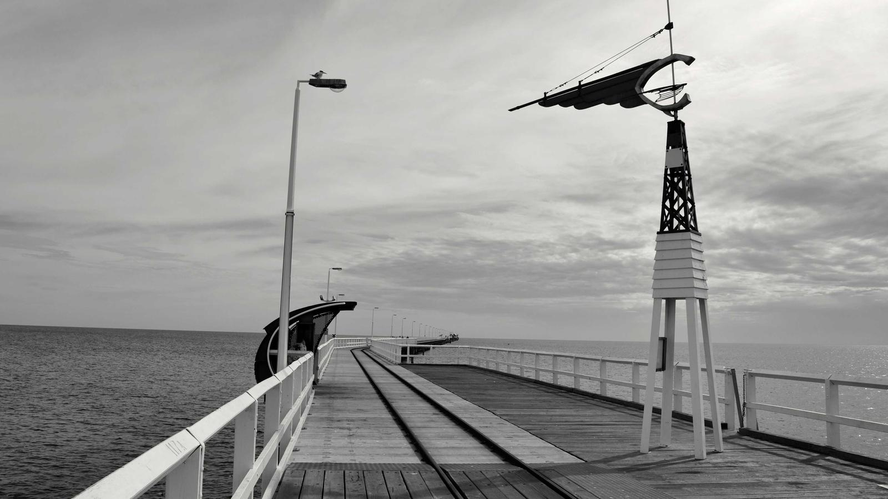

Compassion Camp
A summer day camp for children entering 4K through 5th grade, hosted here and open to kids of all faith backgrounds or none.
The weeks
August 17–20, with an optional field trip on Friday 21 August for 2nd grade and up.
August 24–27, with an optional field trip on Friday 28 August.
$60 per week, with a $10 discount for each additional child in a family.
What happens
Daily guest speakers from the community who inspire kids through real acts of service — animals, nature, the arts.
A hands-on project where the children build and run a miniature community: a food pantry, a bookstore, a compost system.
Pastor Jeannine and UWM education students, with trained youth counselors we call Compassion Ambassadors.